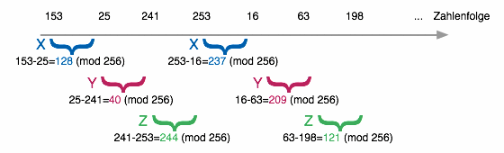
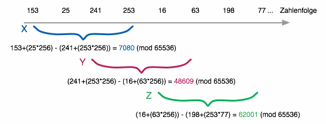
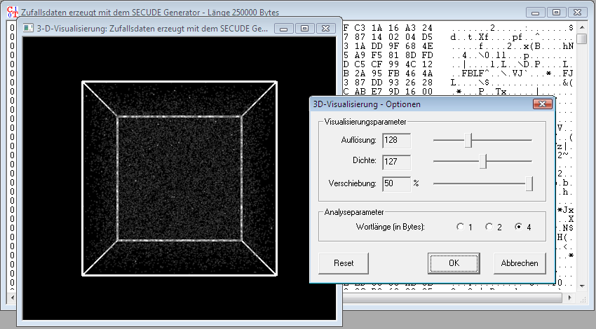
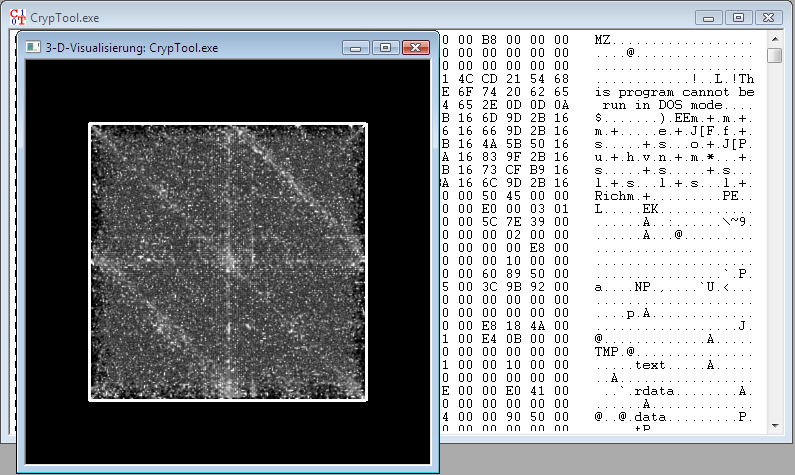

Allgemeine Informationen
Zufallszahlen spielen eine wichtige Rolle in der Kryptographie, die dort beispielsweise zur Erzeugung von Schlüsselmaterial verwendet werden. Für die Beurteilung der Qualität von Zufallszahlen können verschiedene Kriterien herangezogen werden - statistisch gute Zufallszahlen sind nicht notwendigerweise auch kryptographisch sichere. Kann ein Angreifer eine wie auch immer geartete Struktur innerhalb der Zahlenfolge ausnutzen, um ausgehend von bekannten Zahlen zukünftige Werte mit einer gewissen Wahrscheinlichkeit vorherzusagen, so sind die aus diesen Zufallszahlen erzeugten kryptographischen Schlüssel auf diese Weise angreifbar, auch wenn der Kryptoalgorithmus an sich selbst sicher ist.
Für die Bewertung der Qualität von Zufallszahlen gibt es viele verschiedene Kriterien und Tests, die in der Regel die Zahlenfolgen numerisch analysieren und von denen einige auch in CrypTool implementiert sind.
Neben rein numerischen Methoden können Strukturen in Zahlenfolgen auch grafisch dargestellt werden. CrypTool implementiert dazu die so genannte Phasenraumvisualisierung, die zuerst von Dan Kaminsky von DoxPara in dem Programm Phentropy (Teil des Paketto Keiretsu Toolkits) umgesetzt wurde.
Benutzung der Visualisierung
Die 3D-Analyse bezieht sich immer auf das CrypTool-Fenster, das bei der Auslösung der 3D-Visualisierung aktiv war. Nachdem alle Werte der Eingabedaten wie weiter unten beschrieben in 3D-Koordinaten übertragen wurden, wird der resultierende Kubus in einem eigenen CrypTool-Fenster angezeigt. Der Kubus lässt sich
Mit einem Rechtsklick in dem Fenster erhalten Sie ein Pop-up-Fenster, in dem Sie die Anzeigeoptionen verändern können.
1. Box schaltet die so genannte Bounding-Box, also den begrenzenden Rahmen um den Kubus ein und aus.
2. Unter Eigenschaften lassen sich die Anzeigeoptionen einstellen, die sich nach Schließen des Eigenschaftenfensters auf die 3D-Anzeige auswirken:
Die Phasenraumvisualisierung in CrypTool arbeitet folgendermaßen:
In der Folge der aneinander gereihten Worte wird die Differenz jeweils zweier aufeinander folgender Worte berechnet und als Koordinate in einem dreidimensionalen Raum interpretiert:
In diesem Beispiel beträgt die Wortlänge 1, es wird also die Differenz zwischen benachbarten Einzelbytes der Eingangszahlenfolge berechnet. Die Differenzbildung erfolgt modulo des Wertebereiches eines Wortes, also 256 bei Wortlänge 1, 65.536 bei Wortlänge 2 und 4.294.967.296 bei Wortlänge 4.
Jeweils drei aufeinander folgende Differenzwerte werden nun als X-, Y- und Z-Koordinate in einem Kubus interpretiert, der eine Kantenlänge in Höhe des Wertebereichs des Wortes besitzt. Sobald ein solcher Punkt im Raum bestimmt ist, wird die Helligkeit des zugehörigen Punktes um einen festen Wert, die Dichte erhöht. In diesem Beispiel ergeben sich die zwei Punkte P1 = (128, 40, 244) und P2 = (237, 209, 121).
Wird eine Wortlänge beispielsweise von 2 verwendet, bleibt das Verfahren der Differenzbildung prinzipiell gleich, es werden jedoch zwei aufeinander folgende Bytes der Eingabedaten als Wort (im Little-Endian-Format) interpretiert, das in die Differenzbildung eingeht:
Der ermittelte Punkt hat hier die Koordinaten (7080, 48609, 62001).
Die Phasenraumvisualisierung ist geeignet, Strukturen in Datenströmen darzustellen. Ein Strom echter Zufallszahlen erzeugt eine gleichmäßige nebelartige Füllung des Kubus:
Lassen sich jedoch Punkte, Haufen, Linien oder Ebenen erkennen, so ist dies ein Beleg dafür, dass die Eingabedaten eine innere Struktur haben.
Besonders eindrucksvoll ist die Analyse von verschiedenen Dateitypen, wie z. B. Programmdateien, Office-Dokumenten, PDF-Dateien, Bildern, Ton- oder Textdateien. In den meisten Datenformaten lassen sich charakteristische Muster erkennen. Die folgende Abbildung zeigt die Visualisierung einer CrypTool-Programmdatei, in der Ebenen und Geraden zu erkennen sind.
Enthält ein Dokument viele gleichartige Werte (z. B. Nullbytes in Programmdateien), so ist eine hohe Zahl der ermittelten Differenzen ebenfalls Null, was in einer oder mehreren Null-Komponenten der ermittelten Koordinaten resultiert. Ohne Verschiebung der angezeigten Koordinaten würde also eine Häufung in einer Ecke des Kubus auffallen (um den Nullpunkt der drei Achsen herum). Aus diesem Grund ist in den meisten Fällen eine Verschiebung der angezeigten Koordinaten um die Hälfte des Maximalwertes sinnvoll: Die Häufungen um die 0 wandern damit in die Mitte des Kubus und formen auf diese Weise oft markante geometrische Figuren, die sich so viel besser erkennen lassen.
Sind in einer Phasenraumvisualisierung deutliche Strukturen erkennbar, so liegt mit Sicherheit keine wirkliche Zufallsverteilung vor. Der Umkehrschluss ist jedoch nicht gültig: Eine gleichmäßige Füllung des Raumes lässt nicht auf kryptographisch sichere Zufallszahlen schließen!
Um die Phasenraumanalyse dreidimensional darstellen zu können, verwendet CrypTool eine leicht angepasste Version der OpenGL-basierten 3D-Rendering-Engine VolRen aus dem OpenQVis-Projekt.